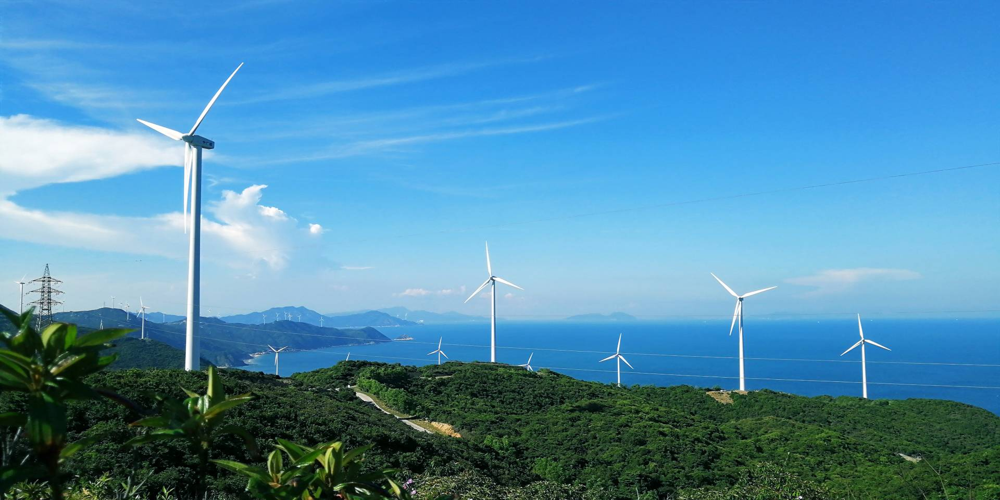
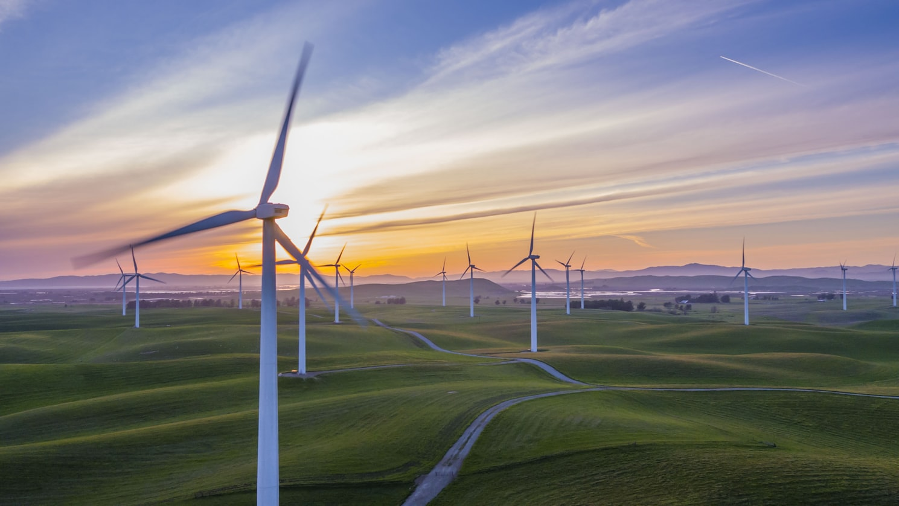

Harnessing energy from the wind has been a thing for centuries. You've probably seen wind turbines from the distnace or possibly upclose. They provide us with what's called "wind power" and their purpose is to essentially use the power of the wind and turn it into electricity, without the use of any external source of energy like coal or gas. There may be many other methods of acquiring wind power but turbines are the most popular and widely-used way there is.
 The only known disadvange of gaining energy from wind is the loud sound the turbines make while producing electricity. Other than that, wind power has more positive potential than a negative one. Turbines can efficiently harness energy with minimal consequences without the need of cutting down forests, forcing animals out of their habitats and threatening people's homes.
If enough turbines are built around the world, it could not only lead to a considerable 'electricity paradise', but also help world-wide issues like global warming and climate change. The air won't be as polluted and instead it's power, the wind, will help us gain the needed amount of energy to go on about our daily lives.
The answers of your questions will be put here as soon as possible